Calculating Beam Deflection With a Spreadsheet
Stand on the end of a diving board and it sags. Step off and it springs back. That sag has a name, deflection, and engineers can predict it to a fraction of an inch before anyone stands on anything. Today you'll build a spreadsheet that predicts how far a 2x4 will sag under your weight. Next time, you'll stand on one and find out how wrong it was.
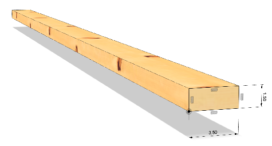
Overview
In structural engineering, deflection is how much a beam, floor, or other structural element bends when a load is applied to it. It doesn't mean the structure is breaking; it's how far the structure temporarily shifts from its original position under stress, and it springs back when the load is removed. Engineers calculate deflection so that beams don't sag enough to crack walls, bounce when people walk on them, or fail altogether.
You'll build a Google Sheet that models the deflection of a beam commonly known as a 2x4 ("two-by-four"), supported at its ends with a load in the middle. Along the way you'll meet the two numbers that decide how stiff a beam is: one that depends only on its shape, and one that depends only on its material. Both come back when you design your bridge.
Builds on: Bridge Challenge: Brainstorm and Select a Design — you have an initial bridge design. Now explore how a beam's shape and material affect bending before analyzing your bridge in Fusion.
Before you start
Sign in to Google and have your notebook open. You'll need a new notebook entry titled Beam Deflection on Day 2.
Materials (Day 2)
- One 2x4, about 8 feet long
- Two supports of the same height, no taller than a step
- Tape measure
- Ruler
- Bathroom scale
- A partner to read the ruler
Safety
The supports stay low, no higher than a single step, and sit flat on the floor. One person on the beam at a time, with a partner standing by as a spotter. Nobody puts a hand or a foot under the beam while it is loaded. If you hear it crack, step off.
You've got it when…
- Your Beam Deflection Sheet calculates deflection from width, height, force, length, and modulus, and recalculates on its own when you change any of them.
- With the starting values it reports about 1.24 inches.
- Calculated cells look different from the cells you type into, and every calculation is a formula, not a typed number.
- An Error row compares a measured deflection to the calculated one as a percentage.
- Your Beam Deflection notebook entry has your measurements, the error, and two possible reasons for the difference.
Collaboration & AI
Work: Build your own Sheet. On Day 2 you'll need a partner to read the ruler, and you'll each enter your own measurements.
AI — AIAS Level 1, No AI: The point of this lab is to build the model yourself and understand every cell in it, so set AI aside. What the levels mean.
Set Up the Sheet
A spreadsheet is only useful if someone else can read it, so we start with column headings.
-
Create a new Google Sheet.
-
Click the title in the upper left corner and rename the Sheet Beam Deflection.
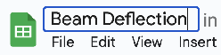
-
Enter
Itemin cell A1. -
Enter
Unitin cell B1. -
Enter
Valuein cell C1. -
Click row number 1 to select the entire row.
-
Click the Bold button
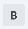
to apply the bold style to the whole row.
Your screen should look like this.
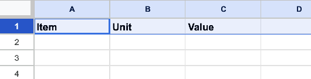
Area Moment of Inertia
The area moment of inertia (I) describes a beam's resistance to bending. A larger I means a stiffer beam; a smaller I means a more flexible one. It depends only on the shape and size of the beam's cross-section, not on what the beam is made of. A steel 2x4 and a pine 2x4 have the same I.
We'll let the spreadsheet do the work.
-
Enter the label
Width (w)in cell A2. -
Enter the label
Height (h)in cell A3. -
Enter the unit
inchesin both cells B2 and B3.Why a 2x4 isn't 2 by 4
"2x4" is the board's nominal size, its rough-sawn size before it was dried and planed smooth. The finished board is 1.5 by 3.5 inches. Lying flat, as in the drawing at the top of this page, it is 3.5 inches wide and 1.5 inches tall.
-
Enter
3.5in cell C2. -
Enter
1.5in cell C3.
Your screen should look like this.
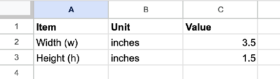
-
Enter the label
Area Moment of Inertia (I)in cell A4. -
Enter the unit
inches^4in cell B4. Read it as "inches to the fourth power." The label in A4 is partly hidden by the contents of B4; we'll fix that later.
The formula for the area moment of inertia of a rectangular cross-section is
where w and h are the width and height of the cross-section. Notice that height is cubed and width isn't. Keep that in mind for the Challenges.
We'll enter a formula in cell C4, an instruction that tells the spreadsheet to calculate a value from other cells instead of storing a number you typed.
-
Select cell C4 and begin typing:
=( -
Click cell C2 to add it to the formula.
-
Type:
* -
Click cell C3 to add it to the formula.
-
Type:
^3)/12The complete formula should look like this in the formula bar, the long field above the column letters that shows what a cell really contains.
-
Press Enter to enter the formula. The result appears immediately. If you change the value in C2 or C3, it recalculates on its own.
Your screen should look like this.
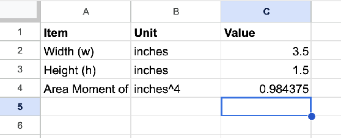
Formulas start with =
If C4 shows the text (C2*C3^3)/12 instead of a number, the equals
sign is missing. Every formula begins with =; without it, the
spreadsheet stores what you typed as plain text.
Force and Length
We'll calculate the deflection we can expect when a load is applied to the center of the beam while its ends are supported. This is a point load, applied at one focused spot, as opposed to a distributed load spread across the whole beam. For now we'll assume a weight and a length; on Day 2 you'll measure real ones.
-
Enter the label
Force (F)in cell A5. -
Enter the unit
lbfin cell B5. "lbf" is the abbreviation for pounds-force.Pounds versus pounds-force
1 lbf is the force of Earth's gravity pulling on a mass of 1 pound. A bathroom scale is a pound-force meter: the number it shows is how hard gravity is pulling you down, even though everyone just calls it "pounds."
-
Enter the value
100in cell C5. -
Enter the label
Length (L)in cell A6, the unitinchesin cell B6, and the value96(8 feet) in cell C6.
Your screen should look like this.
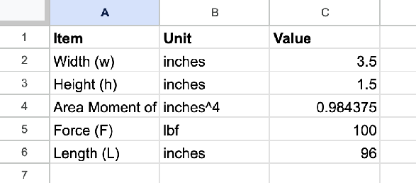
Modulus of Elasticity
Shape was the first half of stiffness. Material is the second. The modulus of elasticity (E), also called Young's modulus, measures how much a material resists elastic (reversible) deformation under stress. It comes from testing samples of a material, so for a given material we look it up.
-
Enter the label
Modulus of Elasticity (E)in cell A7. -
Enter the unit
psiin cell B7. Pounds per square inch is a unit of pressure: one pound of force spread over an area of one square inch. -
Go to MatWeb's property search and navigate to Wood and Natural Products ▸ Wood ▸ Softwood. Find the Modulus of Elasticity for Interior West Douglas Fir (the closest match to our local Ponderosa pine) when it is Green. Read the number from the English units column.
ksi is not psi
The English column reports the modulus in ksi, kilopounds per square inch, which is thousands of psi. We need psi, so the number has to be multiplied by 1,000. The formula in the next step does that for you; don't type the extra zeros yourself.
-
In cell C7, type
=1000*and then the number you found in step 27, and press Enter. The result is that number multiplied by 1,000.Can't find it? Open for the number to expect.
The modulus for green Interior West Douglas Fir is about
1510ksi, so C7 should read about 1,510,000 psi. If MatWeb shows you something very different, you're probably reading the Dry row or a different species.
Deflection
Everything the formula needs is now in column C. The deflection (δ) of a beam with a point load at its center and supports at its ends is
where F is the force applied at the center, L is the length of the beam between supports, E is the modulus of elasticity, and I is the area moment of inertia you calculated earlier.
Google Sheets doesn't have a simple way to type the Greek letter δ (delta), so we'll use a lowercase d for deflection.
-
Enter the label
Deflection (d)in cell A8. -
Enter the unit
inchesin cell B8. -
Enter this formula in cell C8:
This is the formula above, cell by cell. The numerator and the denominator are each wrapped in parentheses so that each is calculated first and then one is divided by the other.
-
Press Enter. The result should be approximately 1.24 inches.
If you got a different number
- Check that C7 holds the modulus from MatWeb times 1,000.
- Check that the other inputs in column C match the figure below.
- If the inputs match, check the formulas: C4 should be
=(C2*C3^3)/12and C8 should be=(C5*C6^3)/(48*C7*C4). Click the cell and read the formula bar; the formula bar never lies.
Your screen should look like this.
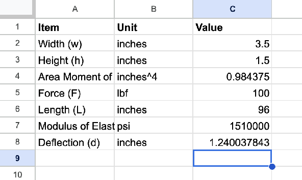
Checkpoint
Change C5 to 200 and watch C8 double. Change it back. A model that
answers "what if" without being rebuilt is the whole reason engineers
use spreadsheets.
Tidying Up
The spreadsheet works. Now let's make it easy to read and use.
-
Float your mouse over the divider between the column A and column B headers until the cursor turns into two vertical bars, as shown here.
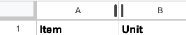
-
Double-click the divider to right-size column A to fit its longest label. You should now be able to read all of Modulus of Elasticity (E) in cell A7.
-
Repeat for the dividers between columns B and C, and between C and D, to shrink columns B and C to fit their contents.
Your screen should look like this.
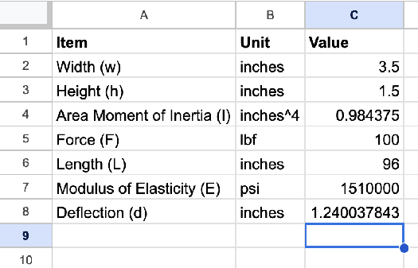
Two decimal places are plenty for readability. The spreadsheet still uses the full value internally.
-
Select cell C4.
-
Click the Decrease decimal places button
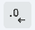
repeatedly until only two decimal places are displayed. If you overshoot, the Increase decimal places button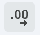
brings them back. -
Repeat for cell C8.
Display, not accuracy
Changing the number of decimal places rounds what you see. It does not change the value stored in the cell or any calculation that uses it. C4 still holds 0.984375; it just shows 0.98.
-
Double-click between the C and D column headers again to right-size column C.
Your screen should look like this.
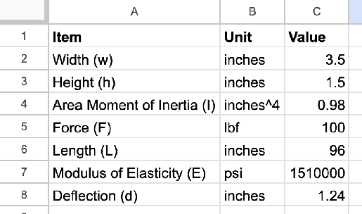
Last, let's make it obvious which cells a user types into and which cells the spreadsheet calculates. Color should always mean something in a spreadsheet, and here it means "don't type over this."
-
Select cell C4.
-
Hold Cmd (or Ctrl on a Windows computer) and click cell C8 so that both C4 and C8 are selected.
-
Click the Fill color button
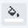
and apply a color of your choice to the two calculated cells. -
Click the Borders button
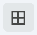
and apply All borders to the same two cells.
Your finished spreadsheet should look like this.
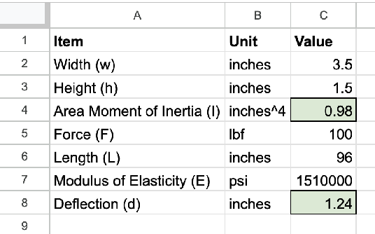
End of Day 1
You have a working model of a beam. Tomorrow we find out how good it is.
Day 2 starts here
Open your Beam Deflection Sheet and start a notebook entry titled Beam Deflection. Your screen should look like the finished spreadsheet above.
Measuring the Error
Let's try the calculation on a real beam. We'll add a cell to record a real measurement and a cell that calculates the error, how far the measurement is from the prediction, as a percentage of the prediction.
-
Change the label in cell A8 to
Deflection (d), Calculated. -
Enter the label
Deflection (d), Measuredin cell A9. -
Enter the unit
inchesin cell B9. -
Enter the label
Errorin cell A10. -
Enter the unit
%in cell B10.
The formula for error is
The vertical bars mean absolute value: drop the minus sign if there is one, because we care how far off we are, not which direction.
-
Enter this formula in cell C10:
C10 reads
1for now (an error of 100 percent), because an empty C9 counts as zero. It will fix itself when you enter a measurement. -
Select cell C8 and click the Paint format button
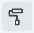
. -
Click cell C10. The fill and border from C8 are applied to C10, which marks it as a calculated cell.
-
With cell C10 still selected, click the Format as percent button
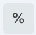
.
Your screen should look like this.
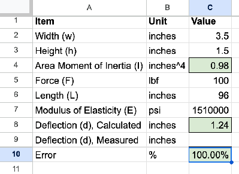
Taking Data
Now the beam. Copy the table below into your Beam Deflection notebook entry; you'll fill it in as you go.
| Measurement | Value | Unit |
|---|---|---|
| Weight (F) | lbf | |
| Beam length between supports (L) | inches | |
| Ruler reading at midspan, no load | inches | |
| Ruler reading at midspan, standing on the beam | inches | |
| Deflection, measured | inches | |
| Deflection, calculated (cell C8) | inches | |
| Error (cell C10) | % |
-
Weigh yourself on the bathroom scale (or weigh a volunteer, if you'd rather) and enter the weight in cell C5 and in your table.
-
Set the 2x4 flat across the two supports, the way the drawing at the top of this page shows it, with its ends resting squarely on each support.
-
Measure the length of the beam between the supports in inches. Enter it in cell C6 and in your table.
Between the supports, not end to end
L in the formula is the span, the distance between the two points holding the beam up. The part of the board hanging past a support doesn't bend, so it doesn't count.
-
Measure and mark the midspan, the point halfway between the supports.
-
With nobody on the beam, have your partner hold the ruler vertically at the midspan and read the distance from the floor to the top of the beam. Record it in your table.
-
Step onto the beam at the midspan, with your spotter standing by, and stand still. Your partner reads the distance from the floor to the top of the beam again. Record it.
-
Step off. Subtract the reading in step 58 from the reading in step 57. This is the measured deflection. Enter it in cell C9 and in your table.
-
Copy the calculated deflection from cell C8 and the error from cell C10 into your table.
-
Below the table, under the heading Two reasons for the difference, write two possible reasons the measured and calculated deflections don't match. Be specific: "measurement error" is a category, not a reason. Which measurement, and why would it be off?
Stuck? Open for places to look.
Where did the number in C7 come from, and is our 2x4 that species, that moisture, and free of knots? Did the beam sit perfectly flat, or was it already bowed before you stepped on it? How precisely can a ruler held by hand read a change of an inch and a bit? Did you stand exactly at the midspan?
Checkpoint
Cell C10 shows a percentage, your table is full, and you have two reasons that name a specific measurement or assumption. An error of 10 to 30 percent is normal for a wooden beam and a hand-held ruler; an error of 300 percent means a number went into the wrong cell.
Challenges
Try these on your own once your data is in. Change the inputs, read the result, then put the original values back.
- Turn it on edge. Swap the width and height so the beam is 1.5 wide and 3.5 tall, the way a floor joist is installed. How much less does it deflect? Find the line in the I formula that explains why builders never lay joists flat.
- Double the span. Change L from 96 to 192 inches. The deflection doesn't double. By what factor does it grow, and which part of the deflection formula is responsible?
Turn It In
- Your Beam Deflection Google Sheet, turned in through Google Classroom, with the Error row and your real measurements in it.
- Your Beam Deflection notebook entry: the completed measurement table and your two reasons for the difference.
How It's Graded
This lab is worth up to 4 points. One score covers everything you turn in.
| Score | What it looks like |
|---|---|
| 4 — Excellent | The Sheet calculates I, deflection, and error with formulas that reference cells, recalculates when an input changes, and visually separates typed inputs from calculated cells; it holds your real weight, span, and measured deflection, and C10 shows the error as a percentage. The notebook table is complete, and your two reasons each name a specific measurement or assumption and say which way it would push the result. |
| 3 — Above Average | The Sheet works and the measurements are in it, with a slip or two: a typed number where a formula belongs, a modulus that wasn't multiplied by 1,000, the error not formatted as a percent, or a reason that's a category rather than a cause. |
| 2 — Average | The Day 1 Sheet is built and calculates about 1.24 inches, but the error row or the real measurements are missing, or the notebook entry has the table without the reasons. |
| 1 — Below Average | A Sheet with labels and typed values but no working formulas, or a notebook entry with no measurements. |
| 0 — Failing | Nothing turned in, or a Sheet that shows no sign of the steps. |